Nos dias de hoje, em que a tecnologia está em grande evidência, as pessoas estão expostas às mais diversas possibilidades de consumo. Com mercados e lojas eletrônicas, é possível acessar uma infinidade de mercadorias e bens de consumo. E veja só, tudo a um clique de distância e entregue na porta de sua casa! Além disso, sequer é preciso utilizar pagamento físico com notas de dinheiro, pois o comércio eletrônico possibilita pagamento eletrônico, e aí pode morar o perigo.
Dívidas feitas em inúmeras vezes em cartões de crédito podem se tornar uma bola de neve, como já visto anteriormente. Manter um orçamento doméstico saudável é uma ótima maneira de manter a mente saudável.
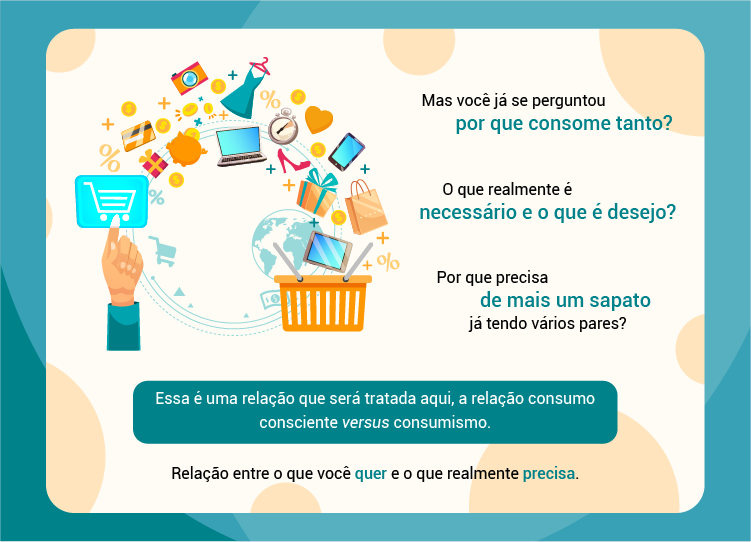
As pessoas se deparam todos os dias com milhares de campanhas de marketing oferecendo inúmeros itens que despertam o desejo por esse ou aquele produto. Realmente, é essa a função dos profissionais de marketing, conhecer profundamente o consumidor e despertar nele o consumo descontrolado. Redes sociais, artistas, jogadores de futebol, entre outros, influenciam as pessoas a consumirem essa ou aquela marca.
Mas você já se perguntou como funciona a produção de produtos de grife ou grandes marcas, extremamente famosas?
Clique ou toque nas setas para visualizar o conteúdo.
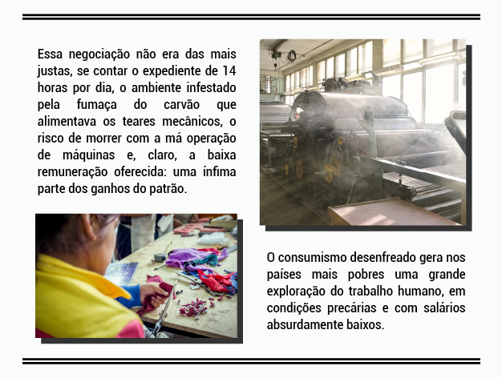
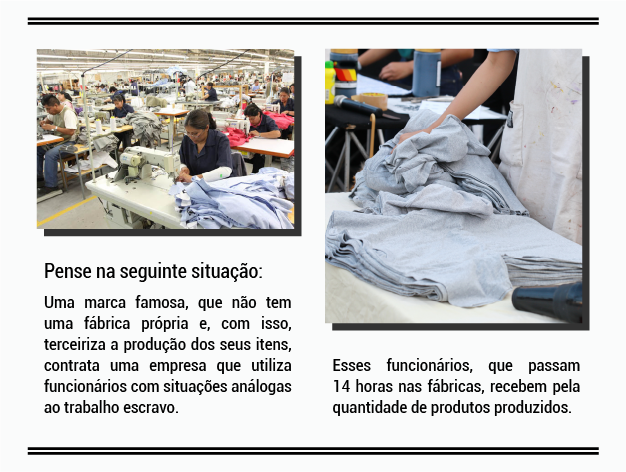
Veja, no vídeo a seguir, um exemplo:
A empresa paga R$ 1,00 por produto finalizado e os trabalhadores levam em torno de 40 min para entregar um item pronto. Ao final de 14 horas, quanto esse funcionário terá para receber?
Sabemos, inicialmente, que cada uma hora corresponde a 60 minutos, logo, teríamos um total de 840 minutos. Quanto será que esse funcionário consegue produzir em 14 horas? Podemos utilizar o método de resolução matemático chamado regra de três, que relaciona as informações que temos para obtermos a informação que procuramos. Nesse caso sabemos que esse funcionário trabalha sem parar por 840 minutos e que leva 40 minutos para concluir a produção de 1 ítem. Então temos:
40 minutos → 1 item
E, em 840 minutos, quantos itens ele conseguirá entregar?
40 minutos → 1 item
840 minutos → x itens
O xis do nosso problema representa a quantidade de itens que buscamos encontrar. Fazendo a multiplicação dos valores 40 por x e 840 por 1:
40 1
840 x
Encontraremos uma equação do primeiro grau, que pode servir de base, posteriormente, para encontrarmos a quantidade destes mesmos produtos, produzidos em qualquer quantidade de tempo, pelos trabalhadores, com isso poderemos calcular quanto cada um receberá ao final de um jornada de 14 horas de trabalho.
40 . x = 840 . 1 (quarenta multiplicado por xis é igual a oitocentos e quarenta multiplicado por um)
40x = 840 (quarenta multiplicado por xis é igual a oitocentos e quarenta)
x = 84040
(xis é igual a oitocentos e quarenta dividido por quarenta)
x = 21 (xis é igual a vinte e um)
Bom, em 14 horas de trabalho, um trabalhador, sem parar nenhum minuto, consegue entregar 21 itens prontos. Para cada item a empresa paga R$ 1,00, multiplicando esses vinte e um itens por um real, teremos um total de R$ 21,00.
Logo, um dia exaustivo de trabalho, gera uma renda de R$ 23,00. Logo, dentro de um mês, pensando que esse funcionário trabalhará 26 dias durante 1 mês, onde só folgará nos domingos, qual o valor mensal de pagamento? Bom, já sabemos que em 1 dia, ele receberá R$ 21,00, logo, em 26 dias, basta multiplicar o valor à receber diário pelo total de dias.
R$ 21,00 . 26 = R$ 598,00 (vinte e um reais multiplicado por vinte e seis é igual a quinhentos e noventa e oito reais)
O salário do funcionário depende da quantidade de itens que ele produz, logo, há uma relação de dependência entre grandezas.
Mas você sabe o que é uma grandeza?
Grandeza é tudo aquilo que pode ser contado e medido, como tempo, velocidade, comprimento, preço, idade, temperatura, entre outros. As grandezas são classificadas em: diretamente proporcionais e inversamente proporcionais.
Clique ou toque para visualizar o conteúdo.
A relação existente entre a produção de uma empresa, a quantidade de funcionários e os dias trabalhados também pode ser observada. É possível fazer uma análise da produção da empresa, fazer uma projeção futura de produção, realizar a perspectiva de entrega de um novo pedido, estudar a possível contratação de funcionários ou, até mesmo, a redução do quadro funcional.
Veja, no vídeo a seguir, um exemplo:
Uma fábrica de calçados com 7 funcionários produz 76 peças em 1 dia, para produzir uma encomenda de 152 peças, quantos funcionários serão necessários?
São encontradas, nesse problema, duas grandezas envolvidas: a quantidade (peças produzidas) e o tempo (dias de produção). Organizando os dados em tabela, temos:
|
Número de funcionários |
Quantidade de peças |
|
7 |
76 |
|
X |
152 |
Tabela com duas colunas e três linhas, na primeira coluna e linha, está escrito “número de funcionários”, na segunda coluna e primeira, linha está escrito “quantidade de peças”. Na segunda linha da primeira coluna, há o número sete, na segunda coluna, há o número 76. Na terceira linha da primeira coluna, há um xis, e na terceira linha da segunda coluna, o número 152.
Ao analisar a organização dos dados, é possível observar que, se aumentar o número de peças produzidas, também é necessário aumentar o número de funcionários. Com isso, percebe-se que esse problema tem grandezas diretamente proporcionais, ou seja, quando uma aumenta, a outra também aumenta na mesma proporção.
E como resolver esse cálculo? Primeiramente, sinalize no problema que as duas grandezas crescem na mesma proporção. Use setas para a mesma direção, apontadas para cima ou para baixo.
|
Número de funcionários |
Quantidade de peças |
|
7 ↓ |
76 ↓ |
|
X ↓ |
152 ↓ |
Tabela com duas colunas e três linhas. Na primeira coluna e linha, está escrito “número de funcionários”, na segunda coluna e primeira linha, está escrito “quantidade de peças”. Na segunda linha da primeira coluna, há o número sete com uma seta indicando para baixo, na segunda coluna, há o número 76 com uma seta indicando para baixo. Na terceira linha da primeira coluna, há um xis com uma seta indicando para baixo, e na terceira linha da segunda coluna, o número 152 com uma seta indicando para baixo.
Depois da organização dos dados, escreva o problema em forma de proporção, com a igualdade entre as razões, e resolva a equação:
sete dividido por xis igual a 76 dividido por 152, seta para direita, sete
Faça a multiplicação em X, multiplicando os meios e os extremos da equação:
76 multiplicado por xis igual a 7.152
xis igual a 1.064 dividido por 76
xis igual a 14
Agora veja, no vídeo a seguir, outro exemplo:
Uma empresa tem uma equipe com três funcionários para fazer a limpeza dos ônibus, os funcionários levam seis dias para executar todo o serviço. Com a necessidade de que o serviço seja feito mais rapidamente, a empresa resolve contratar mais três funcionários. Com esse aumento do número de funcionários, o número de dias para executar todo o serviço vai aumentar ou diminuir? O que você acha?
Como o serviço segue o mesmo e nas mesmas condições, ao aumentar o número de funcionários, logicamente, o serviço será executado em um prazo menor, ou seja, menor número de dias. Sendo assim, nesse exemplo, há grandezas inversamente proporcionais, se uma das grandezas aumenta, a outra diminui proporcionalmente.
Veja os dados organizados.
|
Funcionários |
Dias |
|
3 |
6 |
|
6 |
X |
Tabela com duas colunas e três linhas. Na primeira coluna e linha, está escrito “funcionários”, na segunda coluna e primeira linha, está escrito “dias”. Na segunda linha da primeira coluna, há o número três, na segunda coluna, há o número seis. Na terceira linha da primeira coluna, há o número seis, e na terceira linha da segunda coluna, há um xis.
Já que as grandezas são inversamente proporcionais, as setas serão colocadas em sentidos opostos, indicando essa proporcionalidade inversa.
|
Funcionários |
Dias |
|
3 ↓ |
6 ↑ |
|
6 ↓ |
X ↑ |
Tabela com duas colunas e três linhas, na primeira coluna e linha, está escrito “funcionários”, na segunda coluna e primeira linha, está escrito “dias”. Na segunda linha da primeira coluna, há o número três com uma seta apontada para baixo, na segunda coluna, há o número seis com uma seta apontada para baixo. Na terceira linha da primeira coluna, há o número seis com uma seta apontada para cima, e na terceira linha da segunda coluna, há um xis com uma seta apontada para cima.
Quando a empresa aumentou o número de funcionários, foi possível observar exatamente o dobro (2.3 = 6), (dois multiplicado por três igual seis) logo o tempo para a realização do serviço será a metade:
seis dividido por dois igual a três
Para colocar todas as grandezas no mesmo sentido, uma das razões deve ser invertida, só então é possível escrever a proporção:
três dividido por seis igual a xis dividido por seis
seis multiplicado por xis igual a seis multiplicado por três
xis igual a dezoito dividido por seis
xis igual a três dias
Para realizar o serviço, seis funcionários precisarão de três dias.
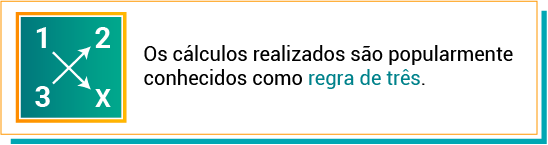
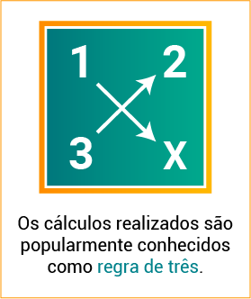
A partir dessa regra, podem ser feitas inúmeras análises em diferentes setores. Dessa forma, é possível entender o funcionamento de uma cadeia de produção em massa. A relação existente entre o tempo, a quantidade de funcionários e os itens produzidos pode ser observada, levando-se em conta que, em determinadas situações, o excesso em todas as grandezas beneficia empresários e prejudica trabalhadores.
Produtos que chegam aos consumidores com preços mínimos, muitas vezes, são produzidos por alguém que trabalha em situações deploráveis, e isso acontece porque há um consumo desenfreado na sociedade.
Um dos grandes meios de publicidade usados hoje é as redes sociais. Veja a reportagem abaixo:
Brasil é o 3.º país que mais usa redes sociais no mundo todo!
No Brasil, são mais de 150 milhões de usuários de redes sociais, e a taxa de usuários pelo total de habitantes é de 70,3%, uma das maiores entre todos os países.
O sudeste é a região do Brasil com a maior taxa, cerca de 78% dos usuários utilizam redes sociais.
A população brasileira, no ano de 2019, foi estimada em 213,3 milhões de habitantes, desses, segundo a reportagem, 70,3% são usuários de redes sociais.
Com uma multiplicação simples, é possível chegar ao valor de habitantes que utilizam redes sociais em relação ao total de habitantes. Veja como:
O resultado desse cálculo é um decimal exato, um número que tem casas decimais finitas, ou seja, com um fim. Nesse caso, o arredondamento foi utilizado para uma melhor compreensão da quantidade. Na matemática financeira ou na estatística, como nesse caso, que trata de dados populacionais, foi utilizada a técnica de arredondamento.
Ouça, o áudio a seguir:
As redes sociais trazem os benefícios da comunicação e também os malefícios do consumo desenfreado. Na figura a seguir, observe que quase 100% das empresas estão presentes nas redes sociais promovendo uma influência nos consumidores e usuários dessas redes.
Gráfico de barras na vertical mostrando a evolução do uso das redes sociais pelas empresas nos anos de 2017, 2018, e 2019. O gráfico demonstra o aumento significativo do uso das redes sociais pelas empresas, principalmente, do Facebook e do Instagram.
O gráfico de barras, modelo utilizado na figura 1, é um gráfico com barras retangulares e comprimento proporcional aos valores que ele apresenta. Esse tipo de representação utiliza barras que podem ser desenhadas na vertical ou na horizontal para ilustrar comparações. No gráfico, é possível perceber o crescimento da presença nas redes sociais no panorama dos anos de 2017, 2018 e 2019. Segundo a legenda, que destina uma cor para cada ano, azul para 2017, vermelho para 2018 e verde para 2019, a presença das empresas nas redes sociais representa números consideráveis.
As grandes empresas de venda de bens e serviços e suas empresas de marketing e propaganda encontraram nas redes sociais uma maneira fácil e rápida de influenciar milhares de brasileiros em um tempo recorde. As pessoas estão expostas a tantas influências que já são notadas muitas mudanças de comportamento.
Ouça, no áudio a seguir, um recorte de uma reportagem com um estudo exatamente sobre essa mudança de comportamento do ser humano, influenciado pelas redes sociais.
Foi só com a popularização e o acesso, de grande parte da população, às mídias sociais que as marcas começaram a investir e criar presença dentro dessas plataformas. Hoje, todos os negócios usam redes sociais de alguma forma. Ou seja, esse cenário mostra o quanto esse comportamento populacional guiado pelas redes impactou as empresas de todo o mundo.
As empresas viram seus lucros aumentarem em proporções estratosféricas nos últimos anos com a popularização das redes sociais, principalmente depois da pandemia de covid-19. O meio mais seguro para fazer compras era o mercado on-line ou os e-commerces, como são conhecidos pelos profissionais da área. Com a possibilidade de lucrar cada vez mais, as grandes marcas viram na terceirização da produção de seus produtos um meio de obter lucros máximos.
Todo produto tem um determinado custo para ser produzido, seja ele variável ou fixo, e, ao ser vendido, precisa gerar uma receita capaz de cobrir as despesas, custear a produção de novos produtos e movimentar o cotidiano da empresa. Dessa forma, o empresário deve estar atento ao faturamento e aos gastos de sua empresa.
Por exemplo, na fabricação de um determinado modelo de botas, última tendência do mercado fashion, há um custo, que engloba todo o material e a mão de obra para a produção do item, e o preço de venda, que visa ser o máximo possível, objetivando grandes lucros.
Isso se relaciona ao custo de produção de um produto, pois toda empresa realiza um investimento na fabricação de uma determinada mercadoria e é necessário fazer um estudo sobre o lucro que será obtido.
A função lucro visa entender a variação entre o preço mínimo de venda, ou seja, o preço de custo, e o preço máximo de venda. Veja a seguinte situação: seu João é um empresário experiente do ramo dos calçados, ele gerencia a produção da fábrica há muitos anos e, com a aproximação da aposentadoria, ele precisa treinar um substituto para o cargo. Analisando atentamente seus funcionários, seu João optou por promover Felipe, um jovem funcionário que tem se mostrado muito empolgado e eficiente. Uma das atribuições de Felipe, na sua nova função, será determinar o preço de venda dos produtos e, para isso, seu João utilizou o gráfico da função lucro.
Ao se fazer uma análise da produção desse empresário nos meses anteriores, chegou-se à conclusão de que a fábrica conseguiria produzir, no máximo, 80 pares de sapatos. Logo, é possível perceber que o mínimo da produção seria zero pares e o máximo 80 pares. Com base nessa análise, pode-se modelar a função de 2º grau (função lucro), que é descrita por: L(x) = – x² +100x – 1600.
Primeiramente, seu João demonstrou para Felipe a variação do preço de venda do par de calçados que está demonstrado do eixo x do gráfico:
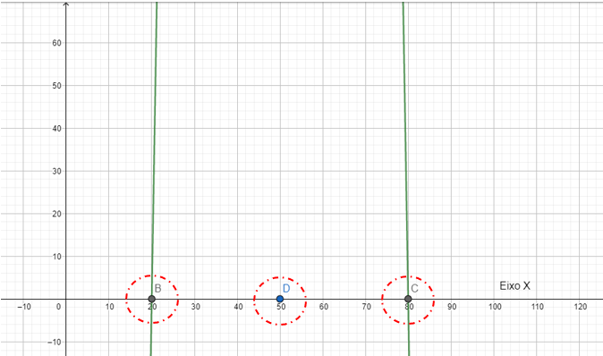
O primeiro ponto marcado no gráfico é o 20, que representa o valor de custo, ou seja, o valor mínimo para a venda do produto. Caso Felipe optasse por vender o par de sapatos por R$ 20, não teria lucro, apenas cobriria os valores gastos com a produção. Da mesma forma, caso Felipe decida vender o par de sapatos pelo preço máximo indicado no gráfico, a quantidade vendida seria muito pequena, pois o valor seria muito alto. A parábola (curva verde no gráfico) mostra que, vendendo o par de sapatos ao preço de custo, o lucro seria zero, conforme o preço aumenta no eixo x, a parábola aumenta no gráfico, expondo que, aumentado o valor de venda, o lucro também aumenta.
É possível observar que o ponto médio marcado no eixo x é 50, depois desse ponto, é possível perceber que a parábola decresce, indicando que o número de vendas diminui se o preço aumenta.
Seu João mostrou para Felipe que o preço de venda pode ser R$ 30, R$ 40 ou R$ 50, mas que o valor escolhido impacta diretamente na quantidade de vendas, ou seja, quanto mais alto o valor, menor o número de pares vendidos. Para que a fábrica seja rentável, Felipe precisa encontrar um equilíbrio entre o preço de custo R$ 20,00 e o preço máximo de venda R$ 80,00.
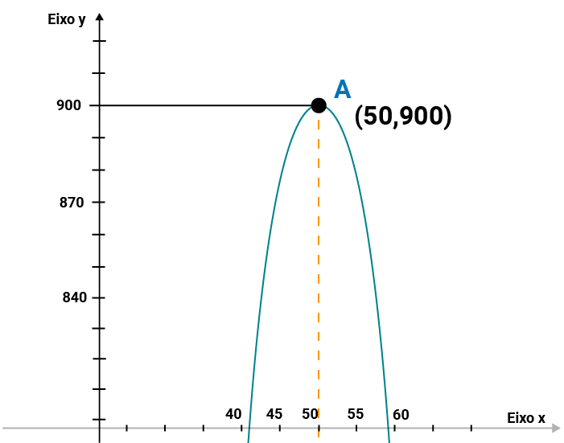
Na análise do gráfico, seu João explicou para Felipe que o ponto máximo que a parábola atinge determina o lucro máximo que a fábrica teria equilibrando preço de venda e quantidade de produtos vendidos. Ao traçar uma linha pontilhada, entre o ápice da parábola e o eixo x, Felipe pôde entender que, segundo o gráfico, o melhor preço para a venda do par de sapatos seria R$ 50,00, pois garantiria um lucro máximo para a fábrica e também um máximo de vendas, além disso, o valor escolhido seria entendido pelo consumidor como um preço justo.
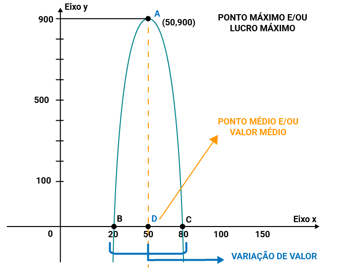
No gráfico completo, é possível observar o crescimento da parábola (curva verde no gráfico) chegando até o lucro mensal máximo e/ou ponto máximo da parábola de R$ 900,00. Isso significa que, vendendo o par de sapatos por um preço médio de R$ 50,00, a quantidade de vendas seria maior.
Esse cenário, em que se obtém grandes lucros pagando valores mínimos para a produção, é fomentado pelo consumo. Toda essa cadeia gera trabalho escravo, ou semiescravo, em que pessoas de países mais pobres precisam se submeter a condições subumanas para garantir o mínimo necessário para sua família, formando um círculo vicioso.
A seguir, foram selecionadas 10 dicas possíveis de se colocar em prática, que poderão ajudar a controlar o impulso de compra, além de melhorar sua vida. Confira!
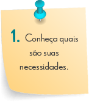
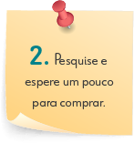
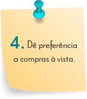
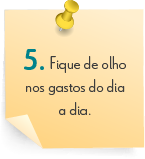
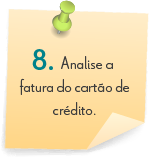
Consumir conscientemente protege o cidadão de cair nas armadilhas de marketing, que argumentam que você precisa de tal produto para se sentir incluído na sociedade.
Clique ou toque na resposta desejada para responder às perguntas
1) Uma confecção familiar, no ano de 2021, dedicou-se à fabricação de máscaras de tecido. Com 5 funcionários, o total de máscaras produzidas diariamente era de 150 máscaras. Com o objetivo de atingir uma produção de 300 máscaras diárias, quantos funcionários, no mínimo, devem ser contratados a mais?
Muito bem!.
Tente novamente.
2) Considerando-se o novo número de 300 máscaras produzidas diariamente, a confecção familiar doará 15% para entidades de assistência social. Qual a quantidade de máscaras doadas?
Muito bem!.
Tente novamente.
3) Considerando-se que essa mesma confecção fez uma venda de 900 máscaras para uma empresa e que o valor cobrado pelo total de máscaras foi R$ 7.200,00, qual o valor unitário da máscara?
Muito bem!.
Tente novamente.
4) Considerando-se essa venda de 900 máscaras, o pagamento foi acordado por meio de boleto bancário, dividido em 3 vezes. A primeira parcela será paga 30 dias após o ato da entrega da mercadoria e cada parcela receberá um adicional de 3% de juros simples ao mês. Qual será o valor total pago?
Muito bem!.
Tente novamente.
5) Analise as sentenças a seguir e marque a alternativa que contém a sequência correta de V (verdadeiro) ou F (falso). (OBEF, 2019.)
I - O consumista é aquele que compra por compulsão, pelo simples prazer de comprar, levando em conta apenas o desejo, e não a necessidade.
II - O consumidor consciente é aquele que, ao escolher um produto, leva em consideração questões como preço, impacto ambiental e social e análise do seu próprio orçamento pessoal e/ou familiar.
III - O consumista tem um bom orçamento pessoal e/ou familiar, dificilmente tem problemas com dívidas acumuladas.
Muito bem!.
Tente novamente.
10 DICAS para evitar compras por impulso e salvar seu planejamento. Blog Racon, 26 out. 2021. Disponível em: https://blog.racon.com.br/dicas-para-evitar-compras-por-impulso-e-salvar-seu-planejamento/#9-definir-um-or-amento-para-compras-diversas. Acesso em: 5 abr. 2022.
GRANDCHAMP, Leonardo. Brasil é o 3.º país que mais usa redes sociais no mundo todo! Rede Jornal Contábil, 1.º out. 2021. Disponível em: https://www.jornalcontabil.com.br/brasil-e-o-3o-pais-que-mais-usa-redes-sociais-no-mundo-todo/#:~:text=O%20Brasil%20%C3%A9%20o%203%C2%BA,horas%20e%2045%20minutos%2C%20respectivamente. Acesso em: 5 abr. 2022.
SILVA, Ana Beatriz B. Mentes consumistas: do consumismo à compulsão por compras. São Paulo: Globo, 2014.
SOCIAL Media Trends. Rock Content, 2019. Disponível em: https://materiais.rockcontent.com/social-media-trends. Acesso em: 5 abr. 2022.
SUA empresa tem que estar nas redes sociais? Blog Comunicarte, 31 maio 2019. Disponível em: https://www.conteudoinboundmarketing.com.br/empresa-nas-redes-sociais/. Acesso em: 5 abr. 2022.
TANJI, Thiago. Escravos da moda: os bastidores nada bonitos da indústria fashion. Revista Galileu, 2016. Disponível em: https://revistagalileu.globo.com/Revista/noticia/2016/06/escravos-da-moda-os-bastidores-nada-bonitos-da-industria-fashion.html. Acesso em: 5 abr. 2022.
UNIVERSIDADE FEDERAL DA PARAÍBA. I Olimpíada Brasileira de Educação Financeira, 2019. Nível 2, Fase 3. Disponível em: https://www.ufpb.br/educacaofinanceira/contents/documentos/obef/provas-e-gabaritos/revisada-fase-3-prova-n2-i-obef.pdf. Acesso em: 10 maio 2022.
WERZBITZKI, João Bruno. Como os novos comportamentos de consumo influenciam nas redes sociais. E-commercebrasil, 12 ago. 2021. Disponível em: https://www.ecommercebrasil.com.br/artigos/como-os-novos-comportamentos-de-consumo-influenciam-nas-redes-sociais. Acesso em: 5 abr. 2022.
{kind=link}